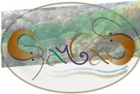

Introduction
SCGLR is an open source implementation of the Supervised Component Generalized Linear Regression (Bry et al. 2013, 2016, 2018), which identifies, among a large set of potentially multicolinear predictors, the strong dimensions most predictive of a set of responses.
SCGLR is an extension of partial least square regression (PLSR) to the uni- and multivariate generalized linear framework. PLSR is particularly well suited for analyzing a large array of explanatory variables and many studies have demonstrated its predictive performance in various biological fields such as genetics (Boulesteix and Strimmer 2007) or ecology (Carrascal, Galván, and Gordo 2009). While PLSR is well adapted for continuous variables, maximizing the covariance between linear combination of dependent variables, and linear combinations of covariates, SCGLR is suited for non-Gaussian outcomes and non-continuous covariates.
SCGLR is a model-based approach that extends PLS (Tenenhaus 1998), PCA on instrumental variables (Sabatier, Lebreton, and Chessel 1989), canonical correspondence analysis (Ter Braak 1987), and other related empirical methods, by capturing the trade-off between goodness-of-fit and common structural relevance of explanatory components. The notion of structural relevance has been introduced (Bry and Verron 2015).
SCGLR can deal with covariates partitioned in several groups called “themes”, plus a group of additional covariates. Each theme is searched for orthogonal components representing its variables in the model, whereas the additional covariates appear directly in the model, without the mediation of a component (Bry et al. 2018).
SCGLR works also for mixed models using an extension of the Schall’s algorithm to combine Supervised-Component regression with GLMM estimation in the multivariate context.
Installation
# Install release version from CRAN
install.packages("SCGLR")
# Install development version from GitHub
remotes::install_github("SCnext/SCGLR")Main functions and works in progress
SCGLR is designed to deal with outcomes from multiple distributions: Gaussian, Bernoulli, binomial and Poisson separately or simultaneously (Bry et al. 2013). Moreover SCGLR is also able to deal with multiple conceptually homogeneous explanatory variable groups (Bry et al. 2018).
SCGLR is a set of R functions illustrated on a floristic data set, genus. scglr and scglrTheme are respectively dedicated to fitting the model with one or more thematic group of regressors. scglrCrossVal and scglrThemeBackward are respectively dedicated to selecting the number of components. print, summary and plot methods are also available for the scglr and scglrTheme function results.
Different works are in progress both dealing for instance with the inclusion of random effects extending SCGLR to the generalized linear mixed model framework (Chauvet, Trottier, and Bry 2018a, 2018b), or the Cox regression model.
Fundings
The GAMBAS project funded by the Agence Nationale pour la Recherche (ANR-18-CE02-0025). https://gambas.cirad.fr/
